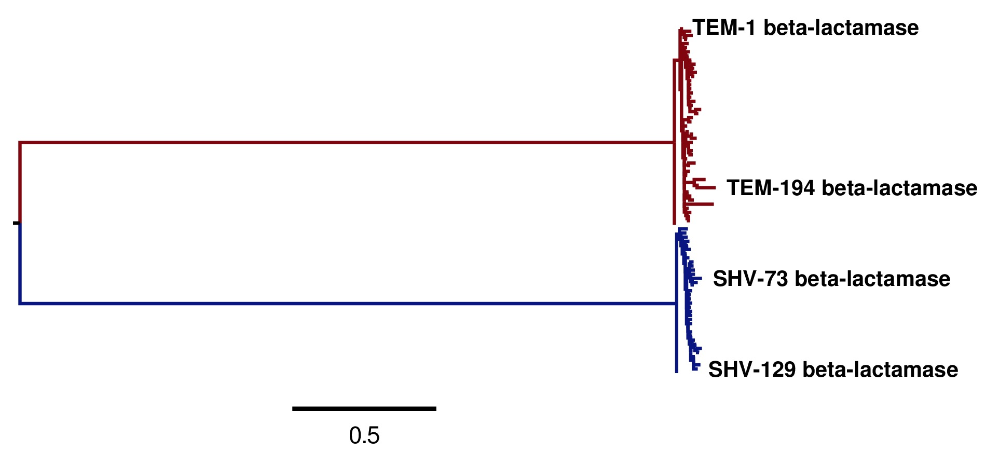
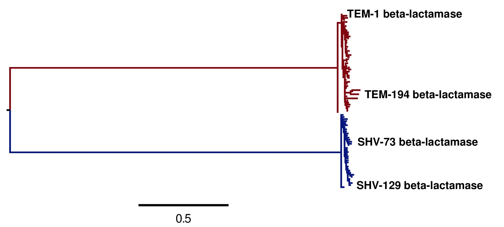

Contents
This is an analysis of the phylogenetic fit of an evolutionary model determined using deep mutational scanning of beta-lactamase. This is the analysis in the paper An experimentally informed evolutionary model improves phylogenetic fit to divergent lactamase homologs.
The results show that an evolutionary model using experimentally determined amino-acid preferences and mutation rates fit from the data outperforms standard phylogenetic evolutionary models.
The data comes from Firnberg et al 2014.
This analysis was performed by Jesse Bloom.
The overall approach is to use the phyloExpCM package to analyze a beta-lactamase sequence phylogeny (tree topology estimated by codonPhyML and then fixed) with an experimentally determined evolutionary model based on data from Firnberg et al 2014, and a variety of standard codon substitution models.
Much of the analysis itself is performed using HYPHY, which is run by phyloExpCM using the scripts detailed in the phyloExpCM documentation.
The code, data, and results from the analysis are in the ./examples/2014Analysis_lactamase/ subdirectory in the main phyloExpCM package directory. This subdirectory contains all of the necessary input files (see Input files) for running the analysis. It also contains a master script (run_analysis.py) that can be used to regenerate the analysis with the command:
python run_analysis.py
provided that you have installed the software described in Software used.
Beta-lactamase sequences are often numbered using the Ambler numbering scheme. This is the numbering scheme used by Firnberg et al 2014. However, the phylogenetic analysis described here converts all numbering to sequential 1, 2, ... numbering (beginning with the N-terminal methionine) of the wildtype lactamase parent used by Firnberg et al 2014. So this is sequential numbering of the protein encoded by the coding sequence in the file TEM1_cds.fasta described in Input files.
The file sequential_to_Ambler.csv converts between the sequential and Ambler numbering scheme. This file is created from the data provided by Firnberg et al 2014 as described in Extracting amino-acid preferences.
The analysis was performed using the following software on the Fred Hutchinson computer cluster using the following Linux distribution:
Linux version 3.5.0-43-generic (buildd@roseapple) (gcc version 4.6.3 (Ubuntu/Linaro 4.6.3-1ubuntu5) ) #66~precise1-Ubuntu SMP Thu Oct 24 14:52:23 UTC 2013
In order to replicate the analysis, you will need to use Linux or Mac OS X, and install the software listed below.
The specific versions of software used are specified. Other versions will likely work as well, but this has not been confirmed.
Python (version 2.7.3)
phyloExpCM (version 0.2)
numpy (version 1.6.1)
matplotlib (version 1.3.1)
Biopython (version 1.58)
mapmuts (version 1.0) was used to make the sequence logo plot and to do some basic sequence manipulation in Python.
EMBOSS needle (version 6.6.0). The executable with the name needle is expected to be in the current search path.
RAxML (version 7.7.6). The executable with the name raxmlHPC-SSE3 is expected to be in the current search path. This is the SSE3 version, and was built using the command:
make -f Makefile.SSE3.gcc
and then copying the executable into the search path.
FigTree (version 1.4.0) was used to open tree files for annotation, visualization, and saving of images.
Path-O-Gen (version 1.4) was used to manually root the trees for visual display.
codonPhyML (version 1.00 201306.18) was used to build phylogenetic trees. The executable with the name codonphyml is expected to be in the current search path. This executable was compiled with the omp options to make it multi-threaded.
HYPHY (version HYPHY 2.220131214beta(MP) for Linux on x86_64) was used to optimize the branches and compute the likelihoods under the different models. The multiprocessor (HYPHYMP) version of the executable was used. To install this, the following commands were run in the unzipped HYPHY source code directory after download:
cmake -DINSTALL_PREFIX=/home/jbloom/.local/ . make MP2 make install
This analysis was run on the FHCRC scientific computing cluster using sbatch (version 2.6.2), and requires sbatch to be installed to run as currently implemented. If you don't want to use sbatch, all you need to do is modify the main run_analysis.py script to not submit any jobs via sbatch. The use of sbatch in the current version simply allows more processors to be used simultaneously and so speeds up the analysis.
ImageMagick convert 6.6.9-7 2012-08-17 was used to convert PDF files to JPGs.
weblogo (version 3.3) was used to make the sequence logo plot.
PyPdf (version 1.13) was used to make overlays on the sequence logo plot.
Here are the input files that are necessary to repeat the analysis. These are the names assigned with the ./examples/2014Analysis_lactamase/ subdirectory of the main phyloExpCM package.
run_analysis.py is a Python script that will perform the analysis assuming that you have all of the appropriate software (see Software used) and input files. To run this script, use:
python run_analysis.py
at the command line.
get_preferences.py is a Python script that is used to extract the amino-acid preferences from Firnberg_missense_mutation_fitnesses.csv.
get_treeseqs.py is a Python script that is used to construct the beta-lactamase sequence alignments.
TEM1_cds.fasta is a FASTA file giving the coding DNA sequence for the parent TEM1 beta-lactamase using by Firnberg et al 2014 as reconstructed from Data S2 of their paper.
Firnberg_missense_mutation_fitnesses.csv is the Excel spreadsheet Data S2 from Firnberg et al 2014 saved in CSV (comma separated values) format using Excel. This is the table that gives the estimated fitness of each amino-acid mutations, disregarding the possibility that different synonymous codons might have unequal fitnesses.
Files containing the beta-lactamase sequences used to build the sequence alignments. The beta-lactamase sequences to use were taken from the Lahey database, which contains a curated listing of beta-lactamases. All TEM and SHV lactamases for which Genbank nucleotide sequences were available were downloaded. First, the accession numbers for all sequences for which these were provided were parsed from the Excel tables in the Lahey database on March-9-2014. Then sequences were batch downloaded from Genbank for all of these accessions for which such sequences were available. The accessions and the batch downloaded sequences are in the following files:
- Lahey_TEM_GenbankAccessions.txt
- Lahey_TEM_GenbankSequences.gb
- Lahey_SHV_GenbankAccessions.txt
- Lahey_SHV_GenbankSequences.gb
1XPB.pdb is PDB file 1XPB of the crystal structure of TEM-1 beta-lactmase, as downloaded from the Protein Data Bank.
1XPB_renumbered.pdb is file 1XPB.pdb renumbered using PDB Goodies so that the numbering is sequential and matches the sequential numbering in TEM1_cds.fasta in sequential numbering as described in Sequence numbering.
1XPB_renumbered.dssp is the result of analyzing 1XPB_renumbered.pdb using the DSSP webserver. This contains the accessible surface area and secondary structure for the crystal structure.
The analysis in this directory can be repeated simply by running the master script run_analysis.py from the command line with:
python run_analysis.py
(or run it using sbatch).
Other than the files delineated under Input files, all data files in this directory can be re-generated with this command. However, the analysis does involve a few manual steps to create nicely formatted and annotated tree images from the raw tree files produced by the script. These manual steps are described in the Steps in the analysis section below.
There is a variable called use_existing_output that is hardcoded into the beginning of this script. This variable is currently set to True, which means that if output already exists it is not overwritten and regenerated. If you want to regenerate the output (such as after changing input files or altering analysis parameters), then either manually delete the old output or change use_existing_output to False to force the script to overwrite old output. This script does not automatically test for dependencies among files, so if you change a file but keep use_existing_output to True, then you need to manually remove any old files with dependencies.
Note that run_analysis.py uses multiple CPUs to speed up some of the analyses. If you don't have as many CPUs on your system, you might want to check that you are not overloading the system -- you can avoid this by using fewer CPUs, which will require you to manually modify the run_analysis.py script.
Note that run_analysis.py uses sbatch by default to run some of its subsidiary programs -- if you don't want to do this, set the use_sbatch option to False within the program.
Here are the steps in the analysis. Except for a few indicated manual steps, all of this is done automatically by the run_analysis.py script.
The approach used here defines the evolutionary model in terms of the amino-acid preferences, where \(\pi_{r,a}\) denotes the preference of site r for amino acid a. Firnberg et al 2014 provide their data in terms of the "fitnesses" of different mutations, which are computed from the deep sequencing counts. Some aspects of the procedure used to compute these "fitnesses" from the deep sequencing counts appear to be rather ad hoc. However, here we do not attempt to re-analyze the raw data of Firnberg et al 2014 (which in any case is only partly provided in their publication), but instead simply take their fitness values at face value and convert them to something approximating the amino-acid preferences. This is done by the Python script get_preferences.py, which can be run using the command:
python get_preferences.py
This script processes the data from Firnberg et al 2014 in Firnberg_missense_mutation_fitnesses.csv to generate the file amino_acid_preferences.txt.
Specifically, the script works as follows:
For each residue r, we read in the fitness value \(w_{r,a}\) for amino acid a in Firnberg_missense_mutation_fitnesses.csv if such a value is present.
For the wildtype amino acid at site r, we set \(w_{r,a} = 1\) rather than using the value (usually close to one) provided in Firnberg_missense_mutation_fitnesses.csv. This is done because their method (see supplemental material of Firnberg et al 2014) defines the fitness of the wildtype to be one, and the values in the file that are usually close to but not exactly one are actually for synonymous mutations.
Sometimes amino acids don't have a fitness specified. When this is the case, we take the mean of all fitness values at the site (including the wildtype amino acid values set to one in the previous step), and then assign this mean fitness to any amino acids with unknown fitness. This is probably non-ideal, because it seems likely that the missing amino acid fitnesses correspond to very low fitness identities. But because Firnberg et al 2014 fail to provide raw sequencing data or computer code, it is unclear how to do any better.
The preference for each amino acid is defined as proportional to its fitness, with the constraint that \(\sum_a \pi_{r,a} = 1\) . So specifically,
where \(a'\) ranges over all amino acids.
The preferences computed using the aforementioned formula are written to the output file amino_acid_preferences.txt. Note that the residues in the created amino_acid_preferences.txt file are numbered sequentially rather than using the Ambler numbering (see Sequence numbering).
The get_preferences.py script also creates the file sequential_to_Ambler.csv, which converts between the sequential and Ambler numbering schemes (see Sequence numbering).
The amino-acid preferences are visualized using a logo plot created by the mapmuts script mapmuts_siteprofileplots.py, which is detailed in the mapmuts documentation. Briefly, this script uses weblogo to visualize the preferences by making a plot in which the heights of amino acids are equal to their preferences at each site. Secondary structure and relative solvent accessibility information calculated using the DSSP webserver from PDB 1XPB is overlaid on the plot. The residues in this plot are numbered using the Ambler numbering scheme (see Sequence numbering).
The main run_analysis.py script runs mapmuts_siteprofileplots.py after creating its input file mapmuts_siteprofileplots_infile.txt. The resulting image is in lactamase_site_preferences_logoplot.pdf. A JPG version of this plot (lactamase_site_preferences_logoplot.jpg) is also created using ImageMagick convert. The JPG is shown below:
Visual display of amino-acid preferences. Letter heights are proportional to the preference for that amino acid at that site. Secondary structure (SS) and relative solvent accessibility information is overlaid on the plots. Amino-acid letters are colored according to a hydrophobicity scale.
The creation of the sequence alignment aligned_lactamases.fasta is performed by the Python script get_treeseqs.py using the command:
python get_treeseqs.py
The steps performed by this script are as follows:
The aligned sequences in aligned_lactamases.fasta are subjected to the following manual steps to check the quality of the data:
The aligned_lactamases.fasta file was manually checked for recombinant sequences using the online interface to DataMonkey to run the SBP and GARD programs. Briefly:
- Using SBP, there was no evidence of recombination using the recommended criterion of cAIC.
- Using GARD, there was no evidence of recombination.
A quick phylogenetic tree was built using RAxML to make sure that the tree topology seemed reasonable. The RAxML output was placed in the subdirectory ./RAxML_output/. The following command was executed:
raxmlHPC-SSE3 -w ./RAxML_output/ -n aligned_lactamases -p 1 -m GTRCAT -s aligned_lactamases.fasta
Note that in the actual command, the full path to ./RAxML_output/ is specified. This created the RAxML tree as /RAxML_output/RAxML_bestTree.aligned_lactamases, as well as several other files in ./RAxML_output/. The tree was manually visualized with FigTree to confirm that it separated into the two expected clades of TEM and SHV sequences.
High-quality phylogenetic trees were then constructed using codonPhyML, which is able to build maximum-likelihood trees with codon substitution models.
The phyloExpCM script phyloExpCM_runcodonPhyML.py (see phyloExpCM documentation for details) was used to run codonPhyML. Trees were built using two different substitution models, with each tree in its own subdirectory within ./examples/2014Analysis_lactamase/. The substitution models used to build the trees:
The GY94 codon model (Goldman and Yang 1994) with:
- The equilibrium codon frequencies estimated empirically using the CF3x4 method.
- A single transition / transversion ratio (kappa) estimated by maximum likelihood.
- The dN/dS ratio (omega) drawn from four discrete gamma-distributed categories (Yang 1994) with the shape parameter and mean estimated by maximum likelihood.
The tree construction was performed in the ./GY94_codonPhyML_tree/ subdirectory. The tree itself is in the file ./GY94_codonPhyML_tree/codonphyml_tree.newick.
The KOSI07 empirical codon model (Kosiol et al 2007), using the variant denoted as ECM+F+omega+1kappa(tv) in Kosiol et al 2007. Specifically:
- The equilibrium codon frequencies were estimated empirically using the F method (empirical estimation of 60 frequencies for the 61 non-stop codons).
- The relative decrease in transversions versus transitions, kappa(tv), estimated by maximum likelihood.
- The relative elevation in nonsynonymous over synonymous mutations (omega) drawn from four gamma-distributed categories with shape parameter and mean estimated by maximum likelihood.
The tree construction was performed in the ./KOSI07_codonPhyML_tree/ subdirectory. The tree itself is in the file ./KOSI07_codonPhyML_tree/codonphyml_tree.newick.
To visualize these trees, the following manual steps were performed for the tree in each subdirectory:
The codonphyml_tree.newick file was re-rooted using Path-O-Gen and then opened in FigTree, adjusted for attractive visual display, and saved to the file annotated_tree.trees.
A PDF image of the tree in the annotated_tree.trees file was saved manually with FigTree, and then converted to a JPG with ImageMagick convert using the command:
convert -density 300 annotated_tree.pdf annotated_tree.jpgThe tree images created by these steps are shown below:
Image of the tree generated by codonPhyML for the GY94 substitution model (file ./GY94_codonPhyML_tree/annotated_tree.jpg). The TEM sequences are colored red, while the SHV sequences are colored blue.
Image of the tree generated by codonPhyML for the KOSI07 substitution model (file ./KOSI07_codonPhyML_tree/annotated_tree.jpg). The TEM sequences are colored red, while the SHV sequences are colored blue.
Each of these trees was also parsed into the subtrees representing the TEM and the SHV sequences keeping the tree topology estimated jointly. The subtree parsing is done automatically by the run_analysis.py script using BioPython. These subtrees have the names:
- ./KOSI07_codonPhyML_tree/codonphyml_tree_SHV.newick : the SHV subtree from ./KOSI07_codonPhyML_tree/codonphyml_tree.newick
- ./KOSI07_codonPhyML_tree/codonphyml_tree_TEM.newick
- ./GY94_codonPhyML_tree/codonphyml_tree_SHV.newick
- ./GY94_codonPhyML_tree/codonphyml_tree_TEM.newick
The sequence alignments for these subtrees are in the files
- aligned_GY94_SHV.fasta
- aligned_GY94_TEM.fasta
- aligned_KOSI07_SHV.fasta
- aligned_KOSI07_TEM.fasta
This is the heart of the analysis: to use various codon substitution models to optimize the branch lengths and likelihood for the tree topologies estimated with codonPhyML and the GY94 or KOSI07 substitution models as described in Construction of phylogenetic trees. The analyses are also done for the TEM and SHV subtrees. This analysis compares the experimentally determined codon substitution models with various other substitution models.
This analysis is done with the phyloExpCM scripts phyloExpCM_optimizeHyphyTree.py (for standard substitution models) and phyloExpCM_ExpModelOptimizeHyphyTree.py (for substitution models using the experimentally determined amino-acid preferences), both of which are described in the phyloExpCM documentation. These scripts uses HYPHY to optimize the branch lengths and any substitution model free parameters while keeping the tree topologies fixed.
The results of the optimizations for the various substitution models are in the subdirectory ./codonmodel_optimized_trees/. Within this subdirectory are further subdirectories containing the results of optimizing the branch lengths with HYPHY using the indicated codon substitution models. For example, ./codonmodel_optimized_trees/Tree-KOSI07_Model-KOSI07_F_omega-global-gamma4_rates-one/ contains one such model. Within this subdirectory, the files of interest are:
- The tree with branch lengths optimized by HYPHY using the substitution model in question is in a file called either hyphy_tree.newick or optimizedtree.newick.
- A summary of the HYPHY results including the log likelihood is found in a file called either hyphy_output.txt or optimizedtree_results.txt.
- *_infile.txt the input file used to run either phyloExpCM_optimizeHyphyTree.py or phyloExpCM_ExpModelOptimizeHyphyTree.py.
The models are:
HalpernBruno : the model described as HalpernBruno in the phyloExpCM documentation for phyloExpCM_OptimizeDetectSelection.py. Briefly, the fixation probabilities \(F_{r,xy}\) are determined from the amino-acid preferences \(\pi_{r,a}\) using formula of Halpern and Bruno 1998 as
\begin{equation*} F_{r,xy} = \begin{cases} 1 & \mbox{if $\mathcal{A}\left(x\right) = \mathcal{A}\left(y\right)$ or $\pi_{r,\mathcal{A}\left(x\right)} = \pi_{r,\mathcal{A}\left(y\right)}$} \\ \frac{\ln\left(\pi_{r,\mathcal{A}\left(y\right)} / \pi_{r,\mathcal{A}\left(x\right)}\right)}{1 - \pi_{r,\mathcal{A}\left(x\right)} / \pi_{r,\mathcal{A}\left(y\right)}} & \mbox{otherwise.} \end{cases} \end{equation*}The mutation rates involve the fitting of four free parameters as described in the phyloExpCM documentation for phyloExpCM_OptimizeDetectSelection.py.
FracTolerated : the model described as FracTolerated in the phyloExpCM documentation for phyloExpCM_OptimizeDetectSelection.py. This model differs from HalpernBruno in that the fixation probabilities are now determined as
\begin{equation*} F_{r,xy} = \begin{cases} 1 & \mbox{if $\mathcal{A}\left(x\right) = \mathcal{A}\left(y\right)$ or $\pi_{r,\mathcal{A}\left(y\right)} \ge \pi_{r,\mathcal{A}\left(x\right)}$} \\ \frac{\pi_{r,\mathcal{A}\left(y\right)}}{\pi_{\mathcal{A}\left(x\right)}} & \mbox{otherwise.} \end{cases} \end{equation*}HalpernBrunorandomized : like HalpernBruno but with the experimentally determined amino-acid preferences randomized among sites. This model is not expected to be good because there is no longer any accurate site-specific information.
FracToleratedrandomized : like FracTolerated but with the experimentally determined amino-acid preferences randomized among sites.
GY94_CF3x4_omega-global-one_rates-one : the Goldman and Yang 1994 model with the equilibrium frequencies from the CF3x4 method (9 parameters) and a single transition-transversion ratio (kappa) and nonsynonymous-synonymous ration (omega) estimated by maximum likelihood (2 parameters).
GY94_CF3x4_omega-global-one_rates-gamma4 : like the GY94_CF3x4_omega-global-one_rates-one model but with the substitution rate drawn from a 4-category discrete gamma distribution (Yang 1994) with the shape parameter estimated by maximum likelihood (adds 1 parameters).
GY94_CF3x4_omega-global-gamma4_rates-one : like the GY94_CF3x4_omega-global-one_rates-one model but with omega drawn from a 4-category discrete gamma distribution (Yang 1994) with the shape parameter estimated by maximum likelihood (adds 1 parameters).
GY94_CF3x4_omega-global-gamma4_rates-gamma4 : like the GY94_CF3x4_omega-global-one_rates-one model but with both the rate and omega drawn from their own 4-category discrete gamma distributions (Yang 1994) with the shape parameters estimated by maximum likelihood (adds 2 parameters).
GY94_CF3x4_omega-global-branchlocal_rates-gamma4 : like the GY94_CF3x4_omega-global-one_rates-gamma4 model but with each branch getting its own omega value optimized by maximum likelihood (adds a number of parameters equal to the number of branch lengths).
Various KOSI07 models as described in Kosiol et al 2007 with the equilibrium frequencies estimated using the F method (60 parameters) and the other options as described immediately above for the GY94 model.
A helpful way to view the results is to look at the main summary files created by run_analysis.py in the examples home directory. These files summarize the results for each tree topology. The results are sorted by the AIC from best to worst. Overall, the files contain the following columns:
Description of the substitution model.
The difference in AIC from the best model.
The log likelihood
The total number of free parameters in the substitution model. This is the sum of the parameters optimized by maximum likelihood and the parameters estimated empirically from the data.
The total number of parameters in the substitution model optimized by maximum likelihood:
- For experimental models, this is four, corresponding to the four optimized mutation rates.
- For GY94 and KOSI07 models, this is always at least two, as both omega and kappa are estimated by maximum likelihood. For some of the variants, omega is drawn from discrete gamma categories, which adds an additional parameter (there is now a shape and rate parameter). For some of the variants, the rate is also allowed to be drawn from discrete gamma categories, which also adds another parameter. Finally, for some of the variants omega is different for each branch, which adds a number of free parameters equal to the number of branches.
The total number of parameters in the substitution model that are empirically estimated from the sequence data:
- For experimental models, this is zero.
- For GY94 models, this is 9 as in the CF3x4 model there are a total of three independent frequencies for each of the three codon positions.
- For KOSI07 models, this is 60 as there are a total of 60 independent frequencies for the 61 non-stop codons.
Here are the results for optimization of the combined TEM and SHV tree built with the GY94 model in codonPhyML (this is the file GY94_summary.csv):
#Summary for tree GY94. # #SUBSTITUTION_MODEL, dAIC, LOG_LIKELIHOOD, FREE_PARAMETERS, MAXIMUM_LIKELIHOOD_PARAMETERS, EMPIRICAL_PARAMETERS HalpernBruno, 0, -4044.85, 4, 4, 0 FracTolerated, 39.24, -4064.47, 4, 4, 0 GY94_CF3x4_omega-global-gamma4_rates-gamma4, 345.96, -4208.83, 13, 4, 9 KOSI07_F_omega-global-gamma4_rates-gamma4, 364.263, -4166.98, 64, 4, 60 GY94_CF3x4_omega-global-gamma4_rates-one, 414.46, -4244.08, 12, 3, 9 KOSI07_F_omega-global-gamma4_rates-one, 420.593, -4196.15, 63, 3, 60 GY94_CF3x4_omega-global-one_rates-gamma4, 482.484, -4278.09, 12, 3, 9 KOSI07_F_omega-global-one_rates-gamma4, 504.858, -4238.28, 63, 3, 60 KOSI07_F_omega-global-one_rates-one, 586.438, -4280.07, 62, 2, 60 GY94_CF3x4_omega-global-one_rates-one, 609.747, -4342.72, 11, 2, 9 FracToleratedrandomized, 1218.44, -4654.07, 4, 4, 0 HalpernBrunorandomized, 1428.02, -4758.86, 4, 4, 0
Here are the results for optimization of the combined TEM and SHV tree built with the KOSI07 model in codonPhyML (this is the file KOSI07_summary.csv):
#Summary for tree KOSI07. # #SUBSTITUTION_MODEL, dAIC, LOG_LIKELIHOOD, FREE_PARAMETERS, MAXIMUM_LIKELIHOOD_PARAMETERS, EMPIRICAL_PARAMETERS HalpernBruno, 0, -4045.11, 4, 4, 0 FracTolerated, 37.26, -4063.74, 4, 4, 0 GY94_CF3x4_omega-global-gamma4_rates-gamma4, 349.625, -4210.92, 13, 4, 9 KOSI07_F_omega-global-gamma4_rates-gamma4, 353.849, -4162.03, 64, 4, 60 KOSI07_F_omega-global-gamma4_rates-one, 406.786, -4189.5, 63, 3, 60 GY94_CF3x4_omega-global-gamma4_rates-one, 416.06, -4245.14, 12, 3, 9 GY94_CF3x4_omega-global-one_rates-gamma4, 479.517, -4276.87, 12, 3, 9 KOSI07_F_omega-global-one_rates-gamma4, 481.487, -4226.85, 63, 3, 60 KOSI07_F_omega-global-one_rates-one, 559.957, -4267.09, 62, 2, 60 GY94_CF3x4_omega-global-one_rates-one, 603.593, -4339.91, 11, 2, 9 FracToleratedrandomized, 1216.8, -4653.51, 4, 4, 0 HalpernBrunorandomized, 1425.74, -4757.98, 4, 4, 0
Here are the results for optimization of the TEM-only tree built with the GY94 model in codonPhyML (this is the file GY94_TEM_summary.csv):
#Summary for tree GY94_TEM. # #SUBSTITUTION_MODEL, dAIC, LOG_LIKELIHOOD, FREE_PARAMETERS, MAXIMUM_LIKELIHOOD_PARAMETERS, EMPIRICAL_PARAMETERS HalpernBruno, 0, -2386.85, 4, 4, 0 FracTolerated, 60.48, -2417.09, 4, 4, 0 GY94_CF3x4_omega-global-gamma4_rates-gamma4, 229.119, -2492.41, 13, 4, 9 GY94_CF3x4_omega-global-one_rates-gamma4, 294.434, -2526.07, 12, 3, 9 GY94_CF3x4_omega-global-gamma4_rates-one, 295.348, -2526.52, 12, 3, 9 KOSI07_F_omega-global-gamma4_rates-gamma4, 303.775, -2478.74, 64, 4, 60 KOSI07_F_omega-global-gamma4_rates-one, 371.818, -2513.76, 63, 3, 60 KOSI07_F_omega-global-one_rates-gamma4, 388.907, -2522.3, 63, 3, 60 GY94_CF3x4_omega-global-one_rates-one, 460.181, -2609.94, 11, 2, 9 KOSI07_F_omega-global-one_rates-one, 533.615, -2595.66, 62, 2, 60 FracToleratedrandomized, 953.5, -2863.6, 4, 4, 0 HalpernBrunorandomized, 984.66, -2879.18, 4, 4, 0
Here are the results for optimization of the SHV-only tree built with the GY94 model in codonPhyML (this is the file GY94_SHV_summary.csv):
#Summary for tree GY94_SHV. # #SUBSTITUTION_MODEL, dAIC, LOG_LIKELIHOOD, FREE_PARAMETERS, MAXIMUM_LIKELIHOOD_PARAMETERS, EMPIRICAL_PARAMETERS HalpernBruno, 0, -1782.66, 4, 4, 0 FracTolerated, 10.28, -1787.8, 4, 4, 0 KOSI07_F_omega-global-gamma4_rates-gamma4, 382.734, -1914.03, 64, 4, 60 KOSI07_F_omega-global-one_rates-gamma4, 393.442, -1920.38, 63, 3, 60 GY94_CF3x4_omega-global-gamma4_rates-gamma4, 399.58, -1973.45, 13, 4, 9 GY94_CF3x4_omega-global-one_rates-gamma4, 407.754, -1978.54, 12, 3, 9 KOSI07_F_omega-global-gamma4_rates-one, 449.52, -1948.42, 63, 3, 60 KOSI07_F_omega-global-one_rates-one, 467.36, -1958.34, 62, 2, 60 GY94_CF3x4_omega-global-gamma4_rates-one, 475.306, -2012.31, 12, 3, 9 GY94_CF3x4_omega-global-one_rates-one, 496.353, -2023.84, 11, 2, 9 FracToleratedrandomized, 940.78, -2253.05, 4, 4, 0 HalpernBrunorandomized, 964.98, -2265.15, 4, 4, 0
Here are the results for optimization of the TEM-only tree built with the KOSI07 model in codonPhyML (this is the file KOSI07_TEM_summary.csv):
#Summary for tree KOSI07_TEM. # #SUBSTITUTION_MODEL, dAIC, LOG_LIKELIHOOD, FREE_PARAMETERS, MAXIMUM_LIKELIHOOD_PARAMETERS, EMPIRICAL_PARAMETERS HalpernBruno, 0, -2392.25, 4, 4, 0 FracTolerated, 58.22, -2421.36, 4, 4, 0 GY94_CF3x4_omega-global-gamma4_rates-gamma4, 232.17, -2499.34, 13, 4, 9 GY94_CF3x4_omega-global-one_rates-gamma4, 292.211, -2530.36, 12, 3, 9 GY94_CF3x4_omega-global-gamma4_rates-one, 298.661, -2533.58, 12, 3, 9 KOSI07_F_omega-global-gamma4_rates-gamma4, 300.22, -2482.36, 64, 4, 60 KOSI07_F_omega-global-gamma4_rates-one, 368.039, -2517.27, 63, 3, 60 KOSI07_F_omega-global-one_rates-gamma4, 376.965, -2521.73, 63, 3, 60 GY94_CF3x4_omega-global-one_rates-one, 462.511, -2616.51, 11, 2, 9 KOSI07_F_omega-global-one_rates-one, 524.95, -2596.73, 62, 2, 60 FracToleratedrandomized, 955.28, -2869.89, 4, 4, 0 HalpernBrunorandomized, 989.18, -2886.84, 4, 4, 0
Here are the results for optimization of the SHV-only tree built with the KOSI07 model in codonPhyML (this is the file KOSI07_SHV_summary.csv):
#Summary for tree KOSI07_SHV. # #SUBSTITUTION_MODEL, dAIC, LOG_LIKELIHOOD, FREE_PARAMETERS, MAXIMUM_LIKELIHOOD_PARAMETERS, EMPIRICAL_PARAMETERS HalpernBruno, 0, -1778.55, 4, 4, 0 FracTolerated, 10.22, -1783.66, 4, 4, 0 KOSI07_F_omega-global-gamma4_rates-gamma4, 382.172, -1909.64, 64, 4, 60 KOSI07_F_omega-global-one_rates-gamma4, 387.314, -1913.21, 63, 3, 60 GY94_CF3x4_omega-global-gamma4_rates-gamma4, 392.923, -1966.01, 13, 4, 9 GY94_CF3x4_omega-global-one_rates-gamma4, 397.129, -1969.11, 12, 3, 9 KOSI07_F_omega-global-gamma4_rates-one, 443.221, -1941.16, 63, 3, 60 KOSI07_F_omega-global-one_rates-one, 458.154, -1949.63, 62, 2, 60 GY94_CF3x4_omega-global-gamma4_rates-one, 463.62, -2002.36, 12, 3, 9 GY94_CF3x4_omega-global-one_rates-one, 481.866, -2012.48, 11, 2, 9 FracToleratedrandomized, 936.56, -2246.83, 4, 4, 0 HalpernBrunorandomized, 959.48, -2258.29, 4, 4, 0
Similar files are created in LaTex formatted tables as GY94_summary.tex, KOSI07_summary.tex, etc.
The key conclusions that can be drawn from the tables generated by Optimizing the trees with various substitution models are as follows:
Overall, these results demonstrate that using the experimentally determined amino-acid preferences improves phylogenetic fit over existing approaches.